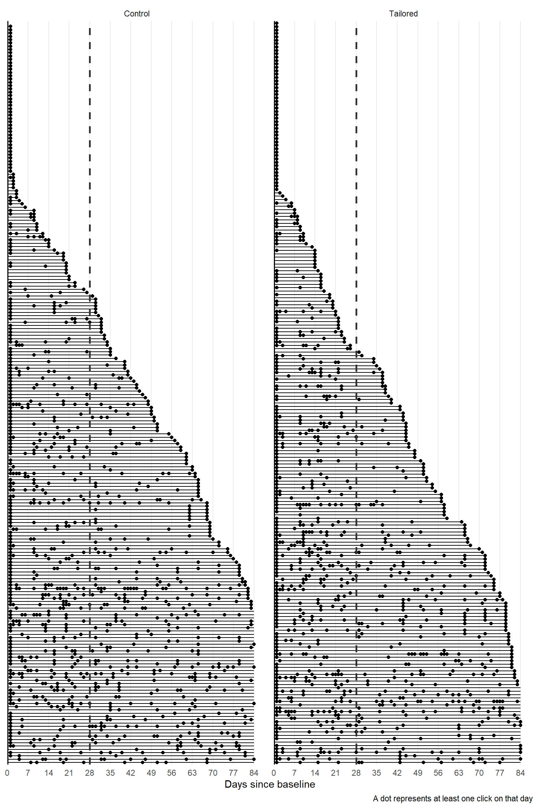
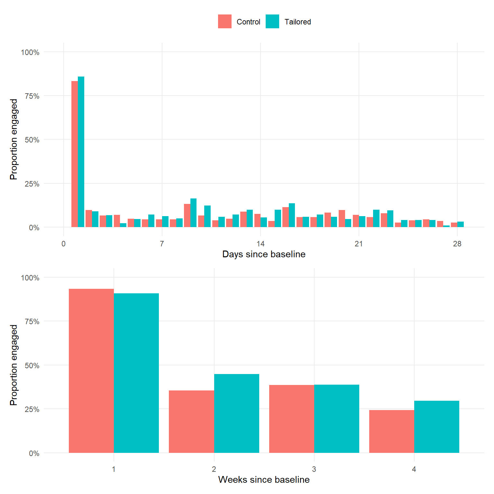
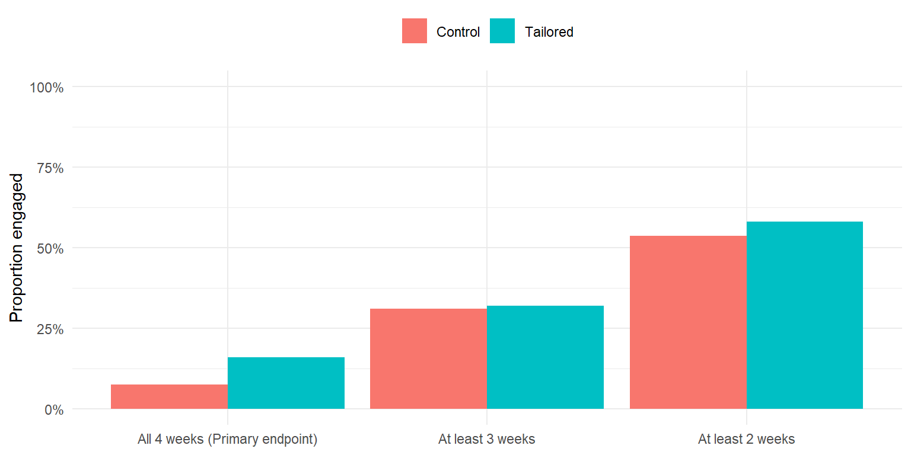

Engagement outcomes (Aim 1)
First 4 weeks (Primary outcome)
For each day after randomization (baseline_survey_timestamp), we determine if a patient clicked on the website. Their click patterns over time by randomization status are shown in Figure 1.
Proportion of patients with at least one click per day/week over time by randomization status is shown in Figure 2.

Figure 1 and Figure 2 show that most patients clicked on the website within the first week after randomization. The proportion of patients who clicked on the website decreased over time. The proportion of patients who clicked on the website was simiar between the two arms.
In the first 4 weeks following randomization, the number and proportion of patients who clicked on the website at least once for all 4 weeks (primary endpoint) and at least 3 or 2 weeks are summarized in Table 1 and visualized in Figure 3.
| Characteristic | Control, N = 2261 | Tailored, N = 2191 | p-value2 |
|---|---|---|---|
| All 4 weeks (Primary endpoint) | 17 (7.5%) | 35 (16%) | 0.005 |
| At least 3 weeks | 70 (31%) | 70 (32%) | 0.8 |
| At least 2 weeks | 121 (54%) | 127 (58%) | 0.3 |
| 1 n (%) | |||
| 2 Pearson’s Chi-squared test | |||

There is a higher percentage of patients who clicked on the website for all 4 weeks in the intervention arm compared to the control arm. The difference in the proportion of patients who clicked on the website for at least 3 or 2 weeks between the two arms is not as pronounced.
Over study duration (24 weeks)
The number of pages visited, unique pages visited, unique sessions, and clicks per session over the first 4 weeks or 24 weeks by randomization status are summarized in Table 2. No participant engaged weekly over 24 weeks.
| Characteristic | First 4 weeks | 24 weeks | ||||
|---|---|---|---|---|---|---|
| Control, N = 2251 | Tailored, N = 2151 | p-value2 | Control, N = 2251 | Tailored, N = 2191 | p-value2 | |
| Number pages visited total | 16 (3, 63) | 23 (3, 73) | 0.5 | 47 (5, 104) | 41 (4, 113) | 0.8 |
| Number unique pages visited | 11 (3, 34) | 16 (3, 40) | 0.6 | 28 (4, 54) | 25 (3, 60) | >0.9 |
| Number unique sessions | 2 (1, 4) | 2 (1, 5) | 0.7 | 4 (1, 8) | 3 (1, 8) | 0.4 |
| Clicks per session | 6 (3, 13) | 8 (3, 16) | 0.4 | 9 (3, 15) | 10 (3, 16) | 0.8 |
| 1 Median (IQR) | ||||||
| 2 Wilcoxon rank sum test | ||||||
The pages visited most frequently (top 10 in frequency of clicks) are shown in Table 3 (page number codebook).
| Rank | By clicks | By patients | ||||
|---|---|---|---|---|---|---|
| Overall | Control | Tailored | Overall | Control | Tailored | |
| 1 | 7 (1365) | 7 (599) | 7 (766) | 6 (366) | 6 (184) | 6 (182) |
| 2 | 6 (1268) | 6 (597) | 6 (671) | 816 (363) | 816 (183) | 816 (180) |
| 3 | 22 (1190) | 22 (597) | 22 (593) | 806 (317) | 806 (164) | 806 (153) |
| 4 | 23 (1164) | 23 (595) | 29 (575) | 28 (287) | 28 (151) | 428 (138) |
| 5 | 29 (1019) | 28 (469) | 23 (569) | 428 (276) | 430 (147) | 28 (136) |
| 6 | 28 (985) | 24 (468) | 28 (516) | 22 (275) | 22 (145) | 22 (130) |
| 7 | 24 (928) | 29 (444) | 24 (460) | 430 (270) | 431 (143) | 431 (126) |
| 8 | 27 (788) | 27 (367) | 27 (421) | 431 (269) | 428 (138) | 23 (123) |
| 9 | 25 (664) | 431 (350) | 713 (363) | 432 (260) | 432 (137) | 430 (123) |
| 10 | 26 (661) | 26 (347) | 25 (329) | 23 (251) | 433 (133) | 432 (123) |
| Page number (frequency) | ||||||